Il giorno prima dal ponte sul Fella, tornando da Patoc, reduci dal Cuel dai Sbrici, Kelen mi fa «mah, a me non dice proprio niente lo Jouf di Sclûse!». Ecco un'idea per il giorno dopo: parto ad un orario vergognoso «tanto a salire lo Jouf si sta pochissimo».
Parto da Villanova: qui in foto l'interessante versante Est del Belepéit.
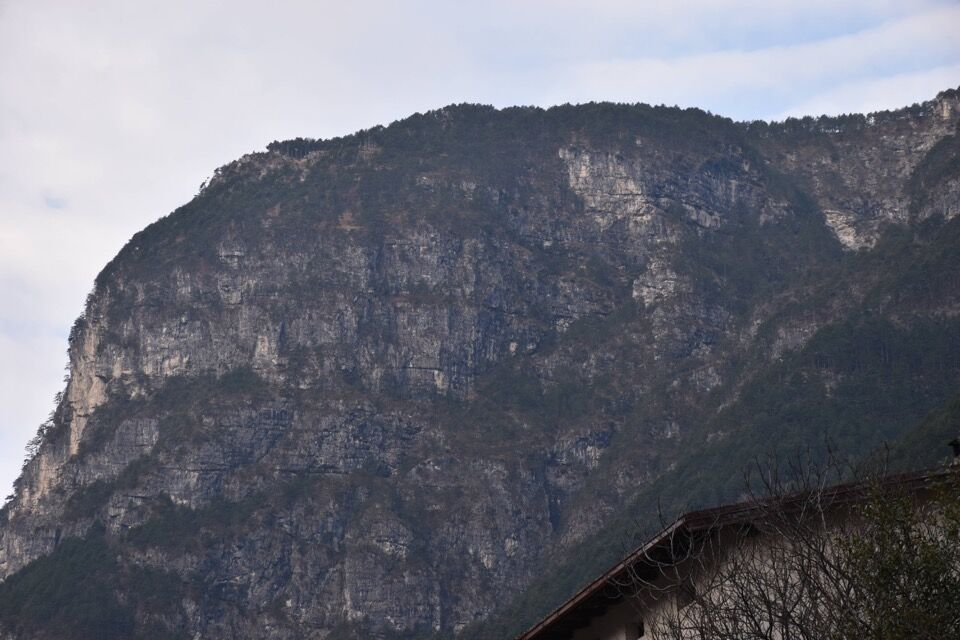Raunis.
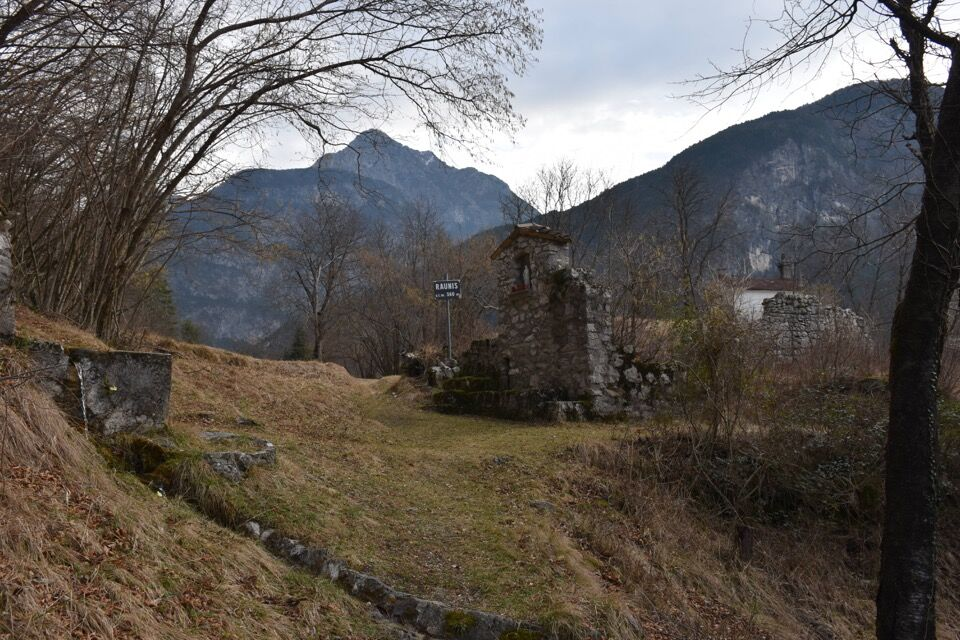Lì in mezzo il cengione centrale su cui passa il sentiero per Patoc (e per il Zè / Cuel di Clâri).
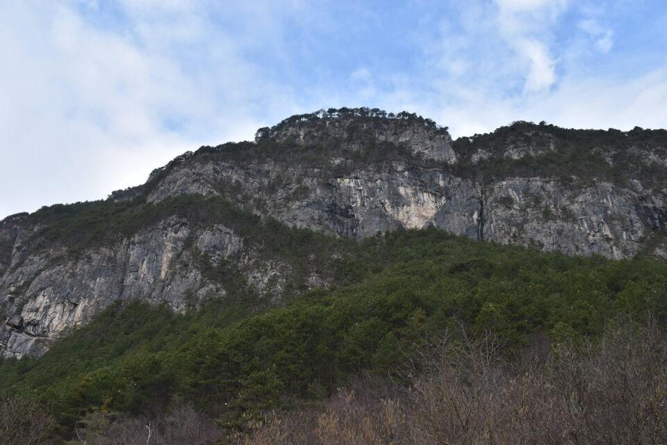Dove il sentiero gira a Est, all'intersezione del riu da le Bevorcje, vedo una traccia che continua verso Ovest sul cengione, vuoi non proseguire?
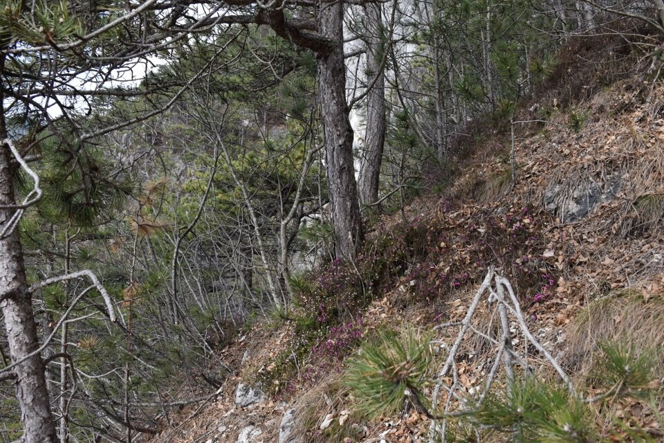Il percorso non è un granché francamente; affascinante la visione della grande parete (Cret di Lìscjis) sopra il riu di Clapéit, poi su dritto per dritto per ripide tracce di camosci.
Finalmente sul piano... a Pineit.
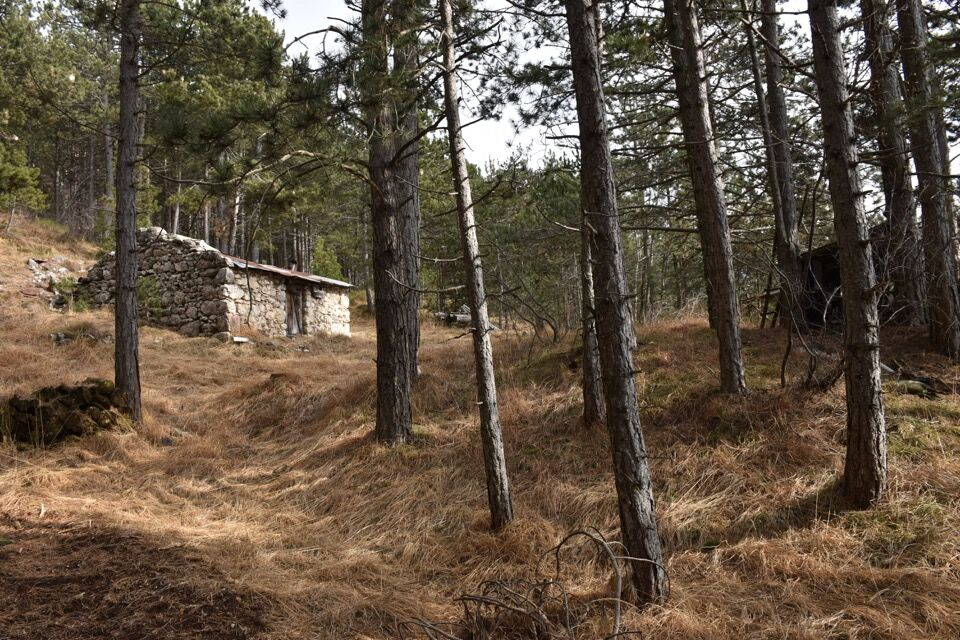Salgo verso lo Jouf: sempre belle visioni verso i monti circostanti.
Il bacino del rio Livinâl, con Jovet e Jôf di Cjadramàç.
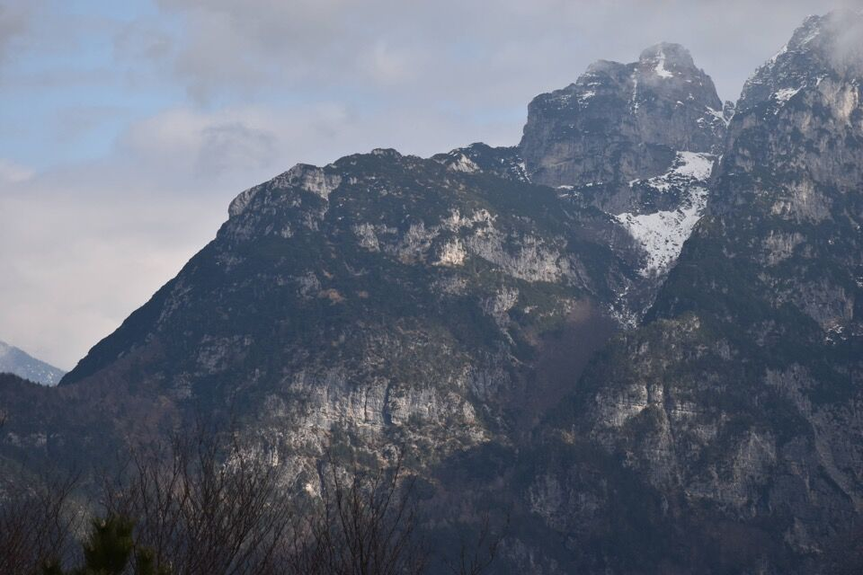Di là Patoc con lo Jama.
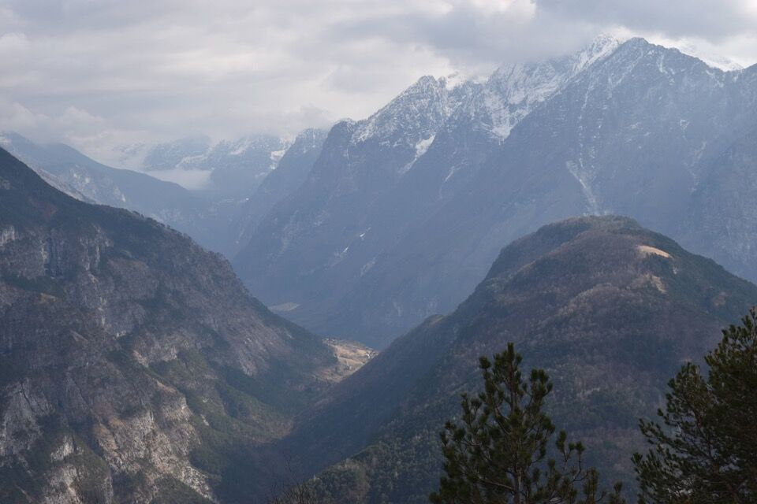Eccomi in cima al Jouf: ma perché nessuno mai sale sul Plananize per il facile pendio Est?
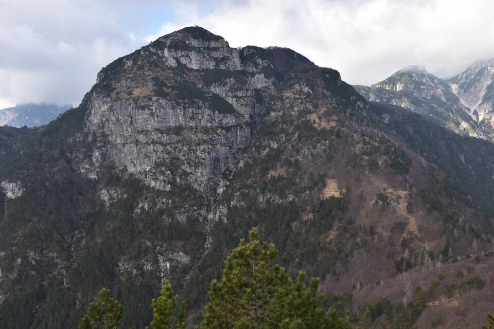Belepéit e Nauràzis, versante Est.
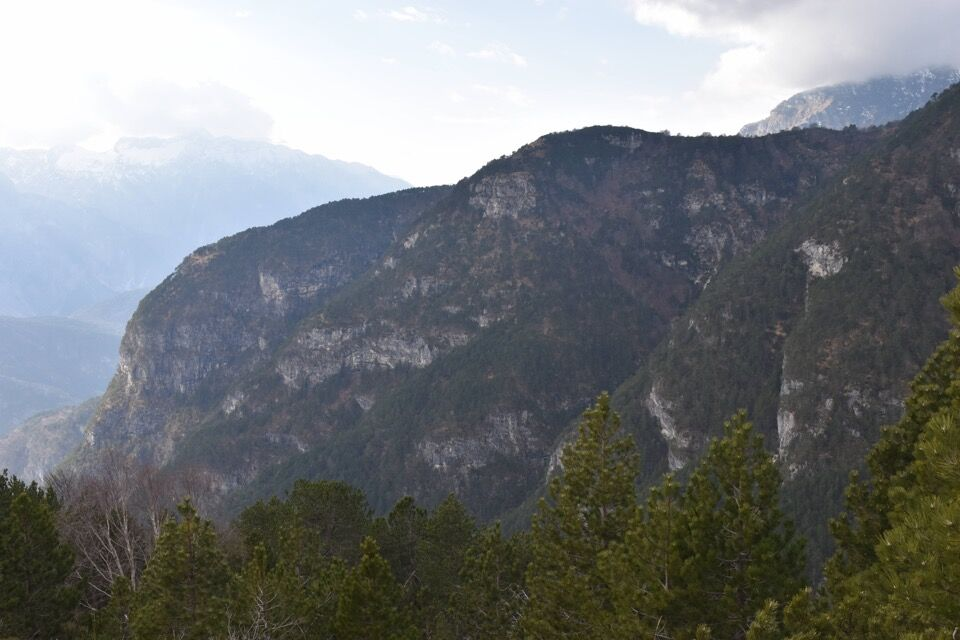Cengia con clapusç (vedi foto precedente): ci passeremo un mese più tardi, come collegamento fra la Scjalute Sante e la traccia del Plan de la Vacje.
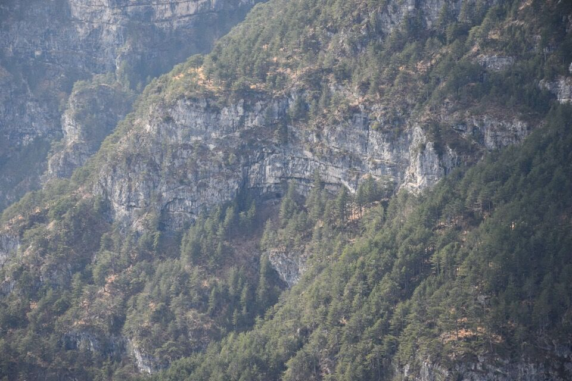La bella valle del rio Molino.
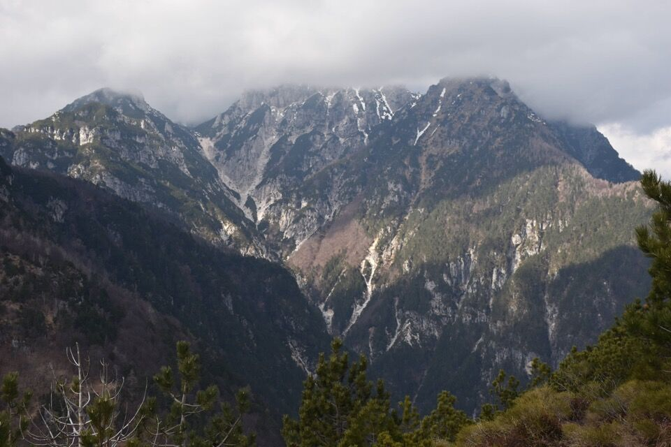Scendo alla Forcje, dove poco più su si trova lo stâli dal
Bècul.
La Forcje è crocevia di molti sentieri, fra cui due tracce
«segrete» che trovi descritte su questo sito.
Arrivato alla Forcje, l'illuminazione: scendiamo per l'Ombrenum.
La prima parte del sentiero è ottima giacché in comune con il sentiero che porta a Cuestemulìn.
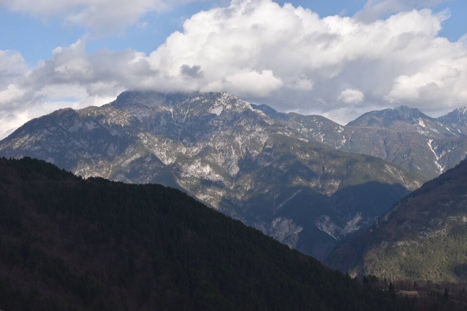Ciò che resta degli stavoli Ombrenum, luogo sperduto e dimenticato.
Il sentiero è molto poco frequentato e appena percettibile in alcuni tratti, ma non difficile da seguire. Ho contribuito con decine di tagli di rami nei punti meno evidenti.
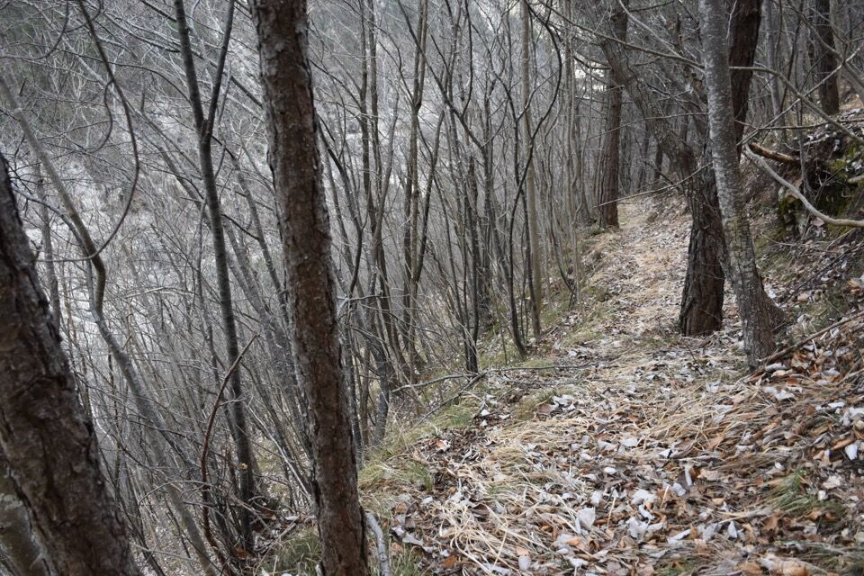Strane costruzioni verso la fine; il ponte è franato, ma si passa lo stesso più sotto.
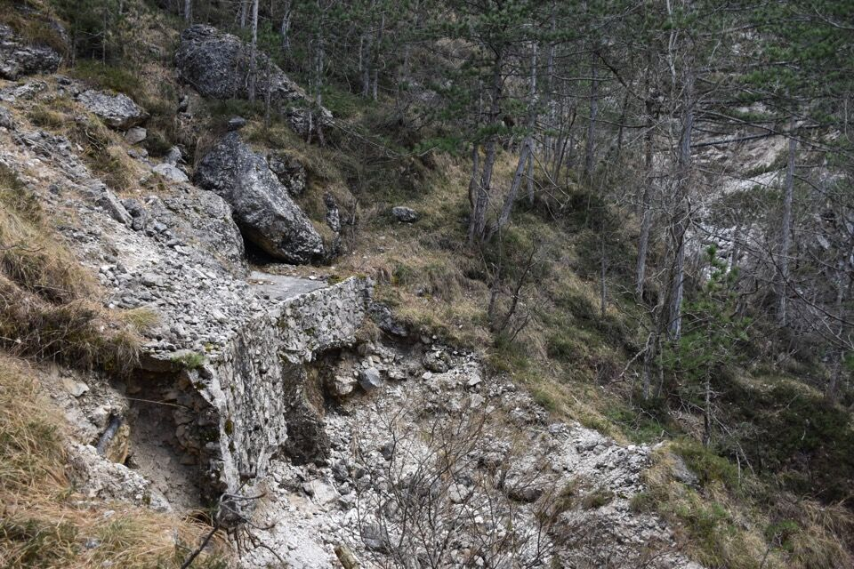 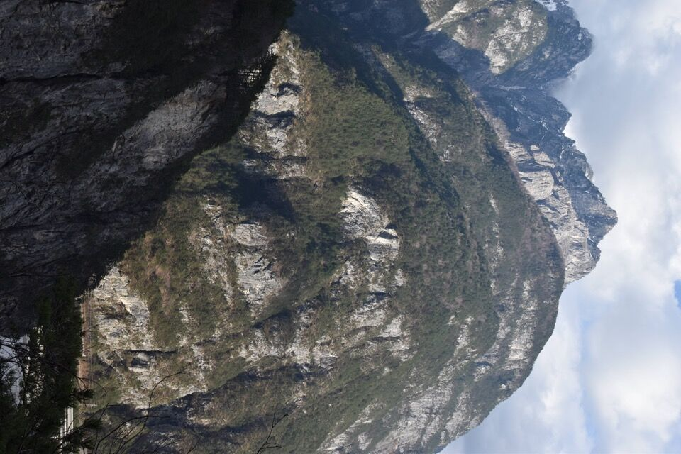Un motivo in più per scendere per l'Ombrenum era quello di
percorrere poi il sentiero dell'acquedotto per tornare a
Raunis: si tratterebbe di una cengia boscosa, a tratti anche
alquanto stretta, a piombo sulla pontebbana.
Dico «si tratterebbe» poiché la situazione è un po' strana:
quello che in origine era un percorso di camosci, ora è
segnalato in maniera esagerata e presenta pure tratti di cenga
cementati e altre costruzioni...
Che orrore alla partenza!
Comunque è un sentiero che merita essere percorso: lo si prende oltre la galleria di Chiusaforte, dove il rio Molino confluisce nel Fella, ovvero dove parte anche il CAI 427.
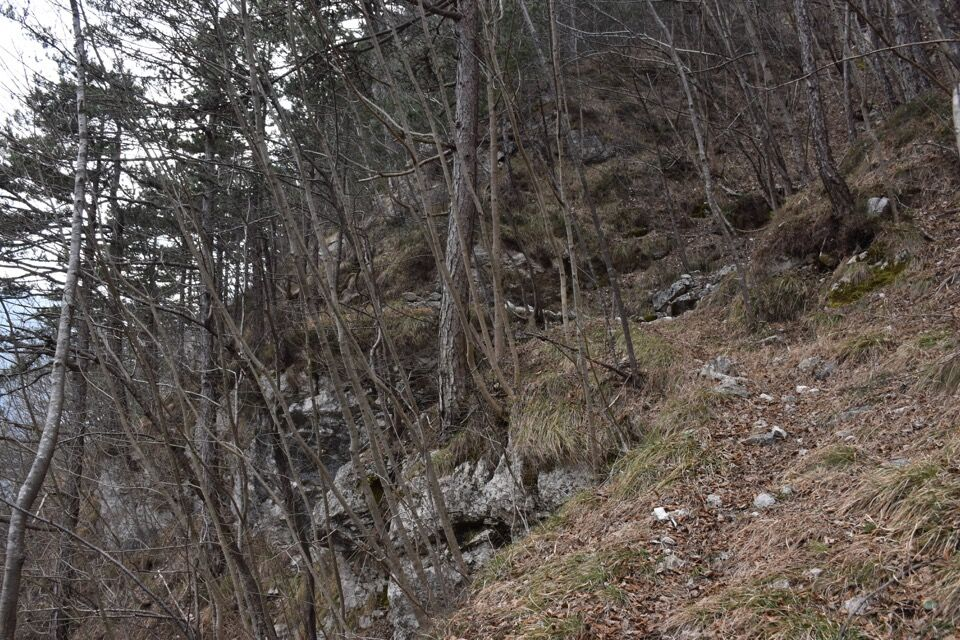Di nuovo a valle: quello che doveva essere una passeggiatina si è rivelato un girone!